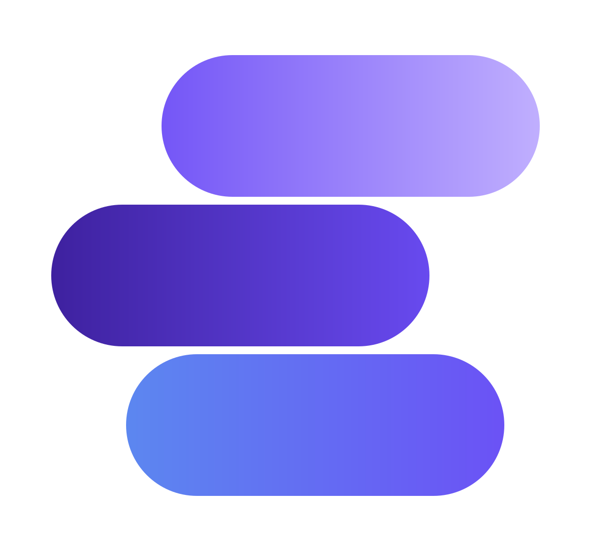

Android
-
Kotlin
47.217 líneas en UniStack
-
Jetpack Compose
563 composables · 31 pantallas
-
Room · DataStore
Desarrollador en formación
Me enfoco en desarrollo Android. Me obsesionan los detalles que nadie nombra pero todo el mundo nota: una animación que aterriza bien, un contraste que se sostiene en cualquier tema, un formulario que no te pierde lo escrito.
01 — Sobre mí
Estudio Contaduría Pública en la Universidad del Atlántico y programo para Android por mi cuenta. Empecé UniStack porque llevaba las notas y los gastos del semestre en tres apps distintas y me resultaba muy tedioso tener que estar saltando de app en app y de página en página.
Que la carrera no sea de sistemas resulta ser una ventaja: soy el usuario de lo que construyo. Cada decisión de la app sale de un problema que tuve yo primero.
Lo que más me interesa no es que una pantalla se vea bien en una
captura, sino que se sostenga y funcione de verdad: con el
teclado abierto, con el color dinámico del sistema, en tema
oscuro o claro, con animaciones, etc.
Me gusta cuidar mucho los detalles, y ahí es donde se rompe casi
todo.
02 — Habilidades
Nadie puede decidir que algo se sabe en un "87%". El nivel va en palabras y es mi propia valoración. Lo comprobable son las cifras de debajo. Tus proyectos hablan por ti.
47.217 líneas en UniStack
563 composables · 31 pantallas
Este sitio, sin frameworks
Sin dependencias externas
129 commits en UniStack
Estas cifras son obtenidas del repositorio de UniStack en tiempo real.
03 — Proyectos

WIPGestor académico para estudiantes: notas por cortes, tareas, horario y gastos. Color dinámico, tema oscuro y un sistema de diseño con verificador propio en el build.
Tokens de color, forma y movimiento compartidos. Incluye una tarea de Gradle que falla la compilación si alguien escribe un color fijo en la capa de interfaz.
Entrada y cierre construidos con la geometría real del logo, medida del PNG/SVG. Respetan el ajuste de movimiento del sistema y se acortan cuando ya las viste una vez para evitar duración inecesaria.
HTML semántico, CSS con variables y rejilla, y JavaScript sin dependencias: menú accesible, validación en vivo, filtros y animaciones por Intersection Observer.
04 — Contacto
Respondo a todo. Si es sobre UniStack, Páginas web, IA, Android o sobre una idea a medio cocinar, escríbeme igual.